Российский университет дружбы народов ## Цель работы
Получить навыки работы с журналами мониторинга различных событий
в системе
Изучить систему журналирования rsyslog
Освоить работу с journalctl
Теоретическая справка
Журналы событий в Linux
Основные понятия: - rsyslog — система журналирования
событий - journalctl — утилита для просмотра журнала
systemd - /var/log/ — директория с файлами журналов -
Уровни логирования: debug, info, warning, error
Запуск терминалов и мониторинга
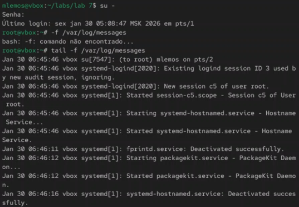
Рис. 1. Запуск трёх вкладок терминала,
получение полномочий администратора в каждой вкладке, запуск на второй
вкладке терминала мониторинга системных событий в реальном
времени
Ошибка при вводе пароля
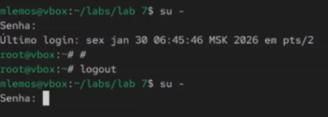
Рис. 2. Возвращение учётной записи своего
пользователя в третьей вкладке терминала, попытка получения полномочий
администратора
Новое сообщение в мониторинге
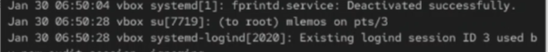
Рис. 3. Новое сообщение в мониторинге
событий во второй вкладке терминала
Работа в третьей вкладке
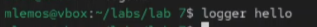
Рис. 4. Ввод в третьей вкладке
терминала
Просмотр сообщений мониторинга
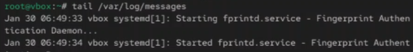
Рис. 5. Возвращение во вторую вкладку
терминала с мониторингом событий, просмотр сообщения, остановка
трассировки файла сообщений мониторинга реального времени, запуск
мониторинга сообщений безопасности (последние 20 строк)
Установка Apache
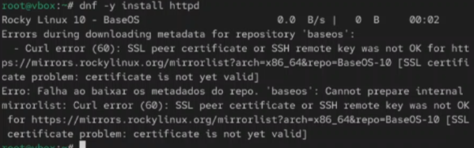
Рис. 6. Установка Apache
Запуск веб-службы
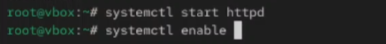
Рис. 7. Запуск веб-службы
Журнал ошибок веб-службы
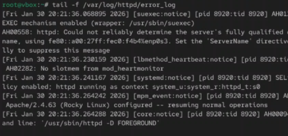
Рис. 8. Просмотр журнала сообщений об
ошибках веб-службы, закрытие трассировки файла журнала
Открытие файла httpd.conf
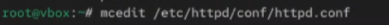
Рис. 9. Получение в третьей вкладке
терминала полномочия администратора, открытие файла httpd.conf на
редактирование
Добавление строки в файл
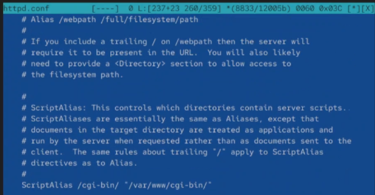
Рис. 10. Добавление строки в файл и
сохранение
Создание файла мониторинга
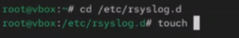
Рис. 11. Создание в каталоге
/etc/rsyslog.d файла мониторинга событий веб-службы и открытие его на
редактирование
Добавление строки в файл мониторинга
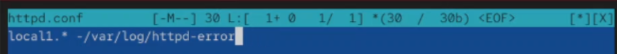
Рис. 12. Добавление строки в файл и
сохранение
Перезагрузка конфигурации
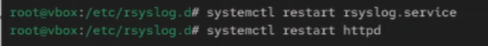
Рис. 13. Открытие первой вкладки
терминала и перезагрузка конфигурации rsyslogd и веб-службы
Создание файла для отладочной информации
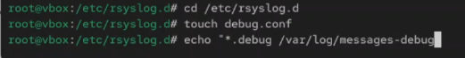
Рис. 14. Открытие третьей вкладки
терминала, создание отдельного файла конфигурации для мониторинга
отладочной информации, ввод заданной строки
Перезапуск rsyslogd
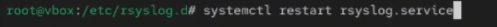
Рис. 15. Открытие первой вкладки
терминала и перезапуск rsyslogd
Запуск мониторинга отладочной информации
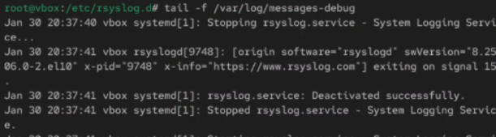
Рис. 16. Открытие второй вкладки
терминала и запуск мониторинга отладочной информации
Ввод команды
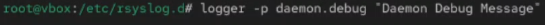
Рис. 17. Открытие третьей вкладки
терминала и ввод команды
Просмотр сообщения отладки
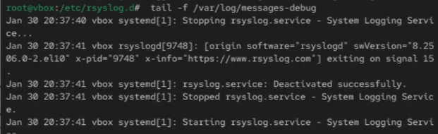
Рис. 18. Просмотр сообщения отладки и
закрытие трассировки файла журнала
Просмотр журнала с journalctl
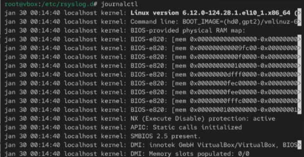
Рис. 19. Открытие второй вкладки
терминала и просмотр содержимого журнала с событиями с момента
последнего запуска системы
Содержимое журнала без пейджера
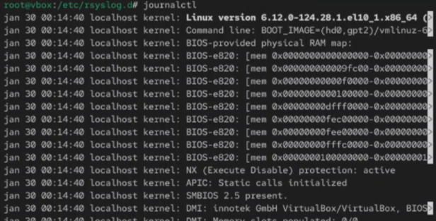
Рис. 20. Просмотр содержимого журнала без
использования пейджера
Режим просмотра в реальном времени
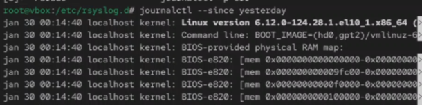
Рис. 21. Режим просмотра журнала в
реальном времени и прерывание просмотра
События для UID0
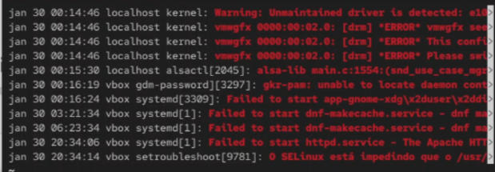
Рис. 22. Просмотр событий для
UID0
Последние 20 строк журнала
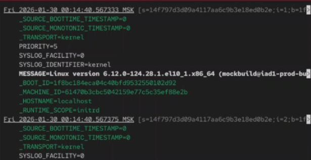
Рис. 23. Отображение последних 20 строк
журнала
Сообщения об ошибках
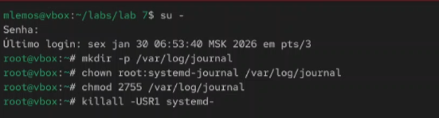
Рис. 24. Просмотр только сообщений об
ошибках
Сообщения со вчерашнего дня
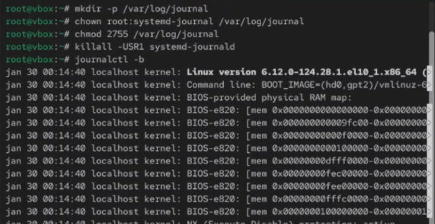
Рис. 25. Просмотр всех сообщений со
вчерашнего дня
Сообщения с ошибкой приоритета
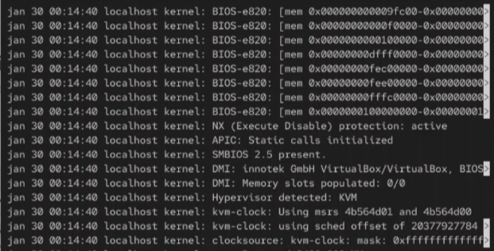
Рис. 26. Просмотр сообщений с ошибкой
приоритета, которые были зафиксированы со вчерашнего дня. Просмотр
детальной информации
Информация о модуле sshd
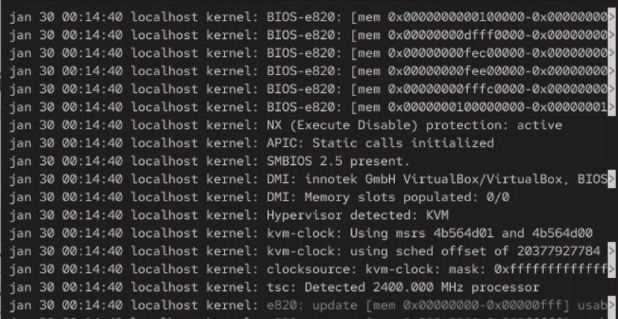
Рис. 27. Просмотр дополнительной
информации о модуле sshd
Работа с постоянным журналом journald
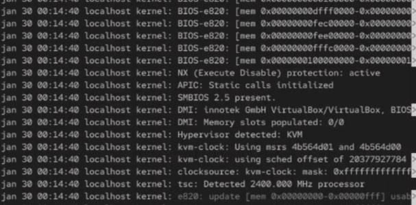
Рис. 28. Запуск терминала и получение
полномочий администратора, создание каталога для хранения записей
журнала, корректировка прав доступа для каталога /var/log/journal,
принятия изменений, просмотр сообщения журнала с момента последней
перезагрузки
Итоговая проверка
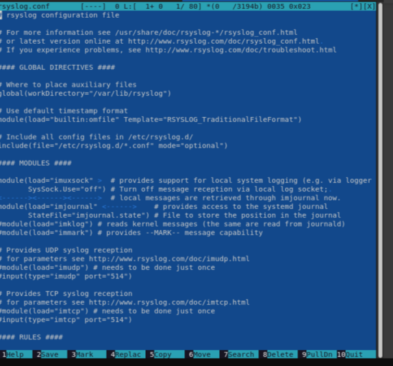
Рис. 29. Итоговая проверка работы с
журналами событий
Вывод
В ходе выполнения лабораторной работы были получены навыки работы с
журналами мониторинга различных событий в системе. Освоены методы
мониторинга системных событий в реальном времени, настройка правил
rsyslog.conf, работа с journalctl для просмотра и фильтрации
журналов.
Список литературы
[1] Linux man pages: rsyslogd(8), journalctl(1), logger(1)